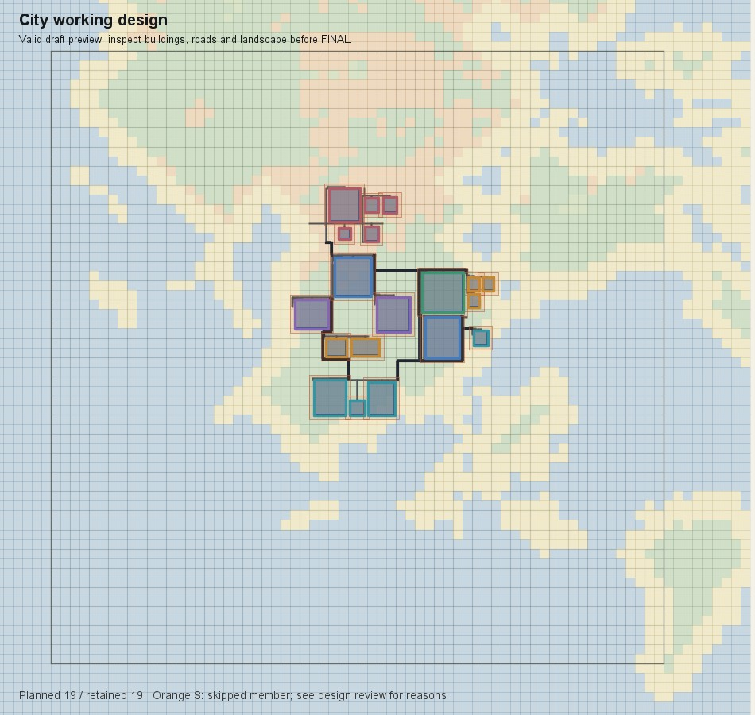
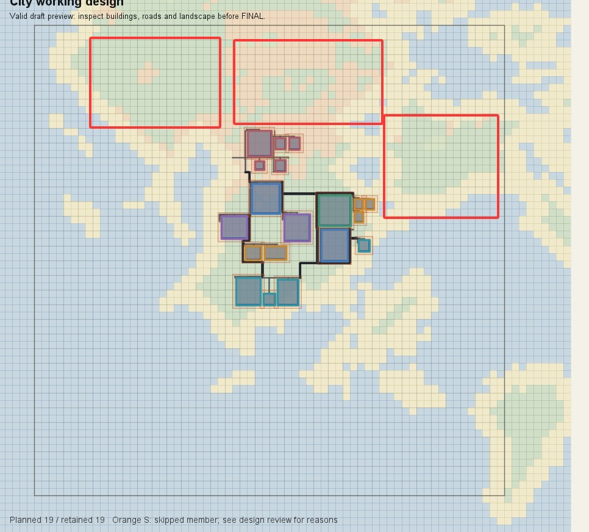
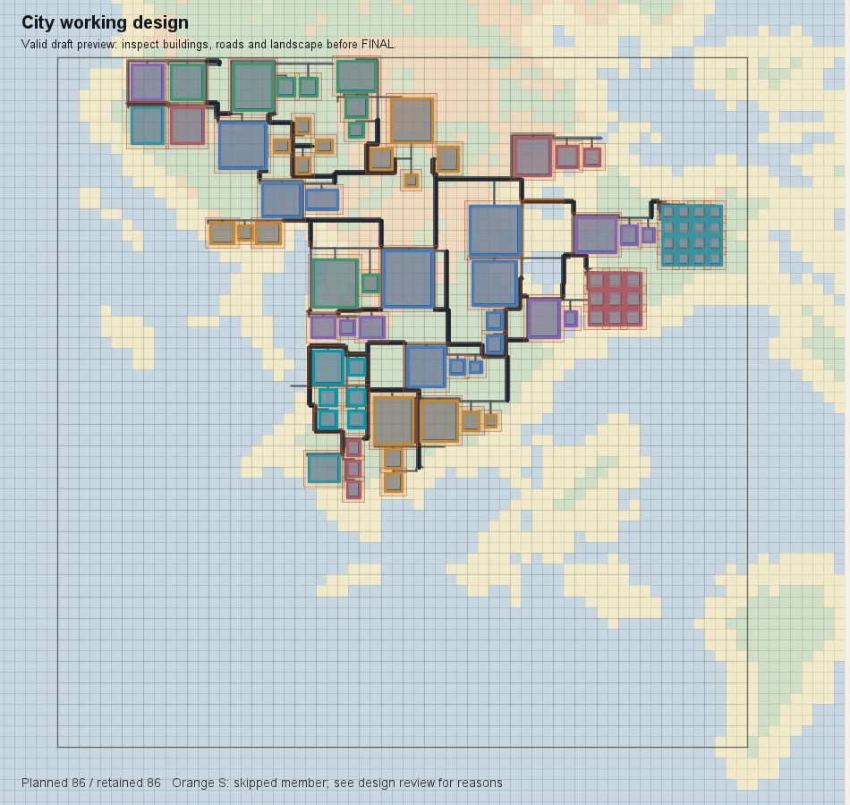

回顾
2025.11 → 2026.10


据 2025-11-21 提交 6d3560e4 · FixedBiomeSource.java 重绘 · 坐标单位为区块
2026 年 1 月 · Astra 用桌面端加入地形扫描 · 国度扩张，进度一下快了起来
切多边形
✗画图再转坐标
✗AI 一个个放
✗2026 年 9 月 · 接入内置 Harness，请有 Flash 的来测试
一座城：23:30 → 凌晨 1 点多"少个字段" "面积不对"，改完再交
一晚上走完整条流程交接包最重十五六万 token，D3 那包被截断
2026 年 10 月 12 日 · 小克加入先把工具说明和设计手册理了一遍


严重不合格
10 月 20 日 · 照手册第一次设计镜潮整座城只有十几栋楼，全挤在岛中间
旧手册里反复写的
"紧凑" "连续" "六十人的例子"
扛的事越多，越要展开，不要收缩
职责 → 片区 → 街坊 · 每块大空地都说清楚做什么

第一次 · 十几栋
照新手册重做 · 86 个单元
把"学生生活"继续往下问
2025.11 → 2026.10